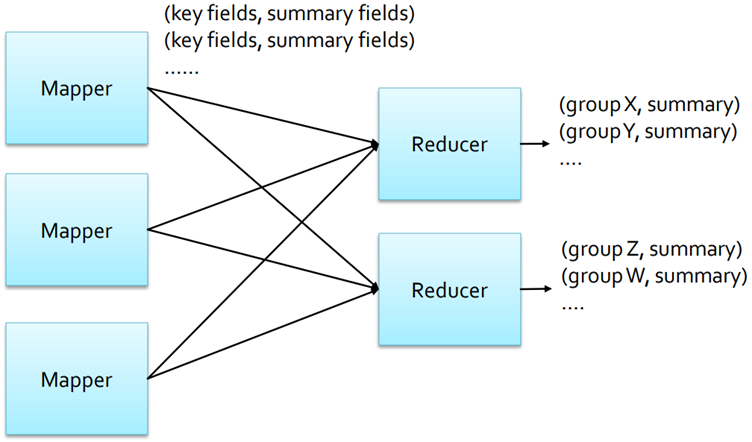
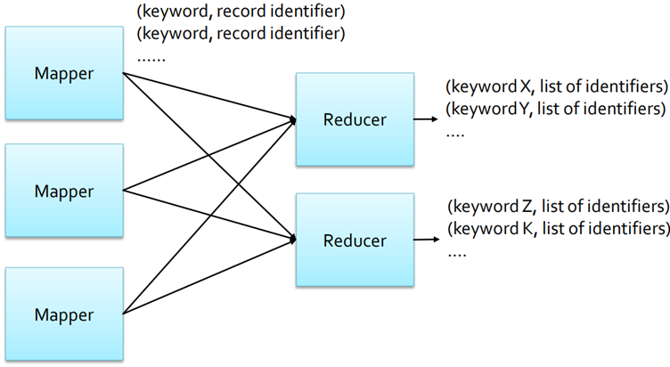
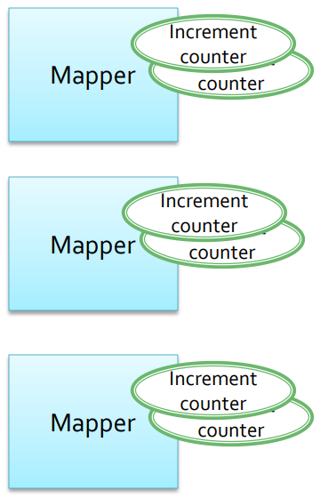
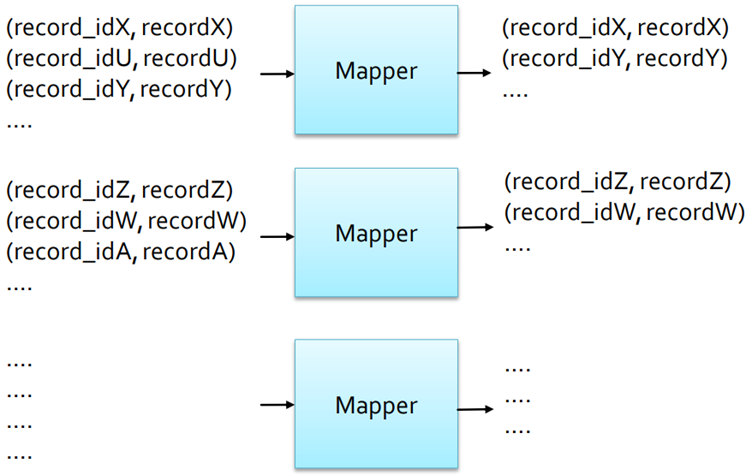
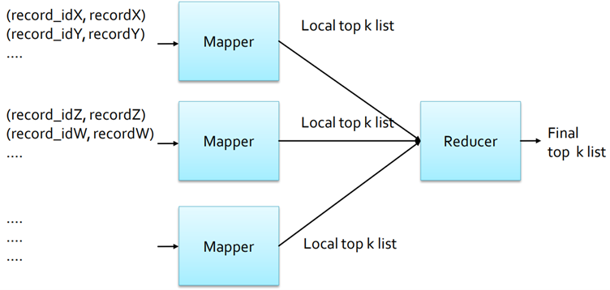
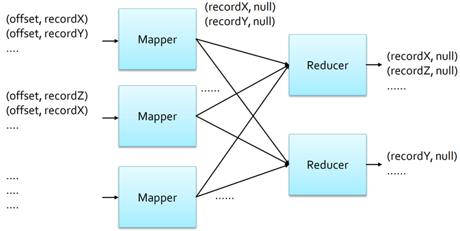

7 MapReduce patterns - 1
Summarization Patterns
Summarization Patterns are used to implement applications that produce top-level/summarized view of the data, such as
- Numerical summarizations (Statistics)
- Inverted index
- Counting with counters
Numerical summarizations
The goal is to group records/objects by a key field(s) and calculate a numerical aggregate (e.g., average, max, min, standard deviation) per group, to provide a top-level view of large input data sets so that a few high-level statistics can be analyzed by domain experts to identify trends, anomalies, etc.
Structure
- Mappers output
(key, value)pairs where- key is associated with the fields used to define groups;
- value is associated with the fields used to compute the aggregate statistics.
- Reducers receive a set of numerical values for each “group-by” key and compute the final statistics for each “group”. Combiners can be used to speed up performances, if the computed statistic has specific properties (e.g., it is commutative and associative).

- Word count
- Record count (per group)
- Min/Max/Count (per group)
- Average/Median/Standard deviation (per group)
Inverted index summarization
The goal is to build an index from the input data to support faster searches or data enrichment: it maps terms to a list of identifiers to improve search efficiency.
Structure
- Mappers output
(key, value)pairs where- key is the set of fields to index (a keyword)
- value is a unique identifier of the objects to associate with each “keyword”
- Reducers receive a set of identifiers for each keyword and simply concatenate them
- Combiners are usually not useful when using this pattern, since there are no values to aggregate

A use case is a web search engine (word – List of URLs, i.e. Inverted Index).
Counting with counters
The goal is to compute count summarizations of data sets to provide a top-level view of large data sets, so that few high-level statistics can be analyzed by domain experts to identify trends, anomalies, …
Structure
- Mappers process each input record and increment a set of counters
- This is a map-only job: no reducers and no combiners have to be implemented
- The results are stored/printed by the Driver of the application

- Count number of records
- Count a small number of unique instances
- Summarizations
Filtering patterns
Are used to select the subset of input records of interest
- Filtering
- Top K
- Distinct
Filtering
The goal is to filter out input records that are not of interest/keep only the ones that are of interest, to focus the analysis of the records of interest. Indeed, depending on the goals of your application, frequently only a small subset of the input data is of interest for further analyses.
Structure
The input of the mapper is a set of records
- Key = primary key
- Value = record
Mappers output one (key, value) pair for each record that satisfies the enforced filtering rule
- Key is associated with the primary key of the record
- Value is associated with the selected record
Reducers are useless in this pattern, since a map-only job is executed (number of reduce set to 0).

- Record filtering
- Tracking events
- Distributed grep
- Data cleaning
Top K
The goal is to select a small set of top K records according to a ranking function to focus on the most important records of the input data set: frequently the interesting records are those ranking first according to a ranking function (i.e., most profitable items, outliers).
Structure
Mappers
Each mapper initializes an in-mapper (local) top k list. k is usually small (e.g., 10), and the current (local) top k-records of each mapper(i.e., instance of the mapper class) can be stored in main memory
- The initialization is performed in the setup method of the mapper
- The map function updates the current in-mapper top k list
The cleanup method emits the k (key, value) pairs associated with the in-mapper local top k records
- Key is the “null key”
- Value is a in-mapper top k record
Reducer
A single reducer must be instantiated (i.e., one single instance of the reducer class). One single global view over the intermediate results emitted by the mappers to compute the final top k records. It computes the final top k list by merging the local lists emitted by the mappers. All input (key, value) pairs have the same key, hence the reduce method is called only once

- Outlier analysis (based on a ranking function)
- Select interesting data (based on a ranking function)
Distinct
The goal is to find a unique set of values/records, since in some applications duplicate records are useless (actually duplicated records are frequently useless).
- Mappers emit one
(key, value)pair for each input record- Key = input record
- Value = null value
- Reducers emit one
(key, value)pair for each input(key, list of values)pair- Key = input key, (i.e., input record)
- Value = null value

- Duplicate data removal
- Distinct value selection